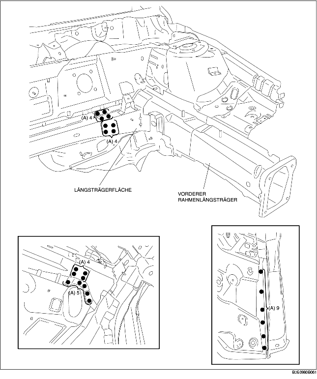
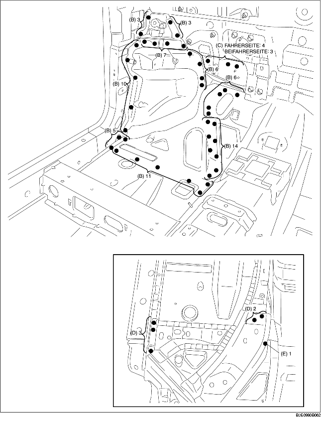
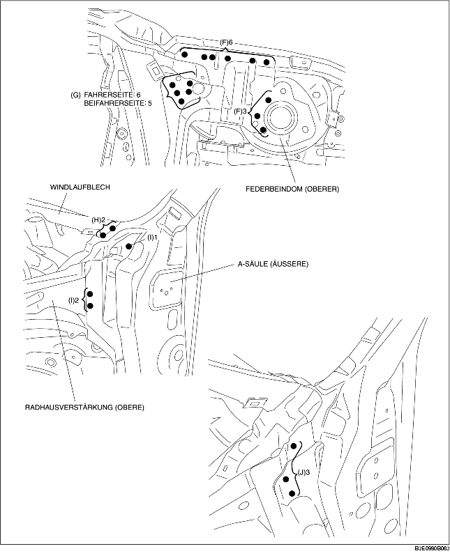

1. Die 26 mit (A) gekennzeichneten Schweißstellen aufbohren.

2. Die 65 mit (B), die 4 mit (C) an der Fahrerseite und die 3 mit (C) an der Beifahrerseite gekennzeichneten Schweißstellen aufbohren.
3. Die 5 mit (D) gekennzeichneten Schweißstellen von unten aufbohren.
4. Die 1 mit (E) gekennzeichnete Stelle von unten anbohren, damit sie nicht von der Innenseite her sichtbar ist.

5. Die 9 mit (F), die 6 mit (G) an der Fahrerseite und die 5 an der Beifahrerseite gekennzeichneten Schweißstellen aufbohren.
6. Wenn das Teil des vordern Rahmenlängsträger ausgebaut wird, kann die Scharnierverstärkung (innere) mit der Radhausverstärkung (obere) stören und den Ausbau erschweren, daher die 2 mit (H) und die 3 mit (I) gekennzeichneten Stellen aufbohren und dann die A-Säule (äußere) nach Außen öffnen.
7. Die 3 mit (J) gekennzeichneten Stellen aufbohren und das Teil des vordern Rahmenlängsträgers ausbauen.
